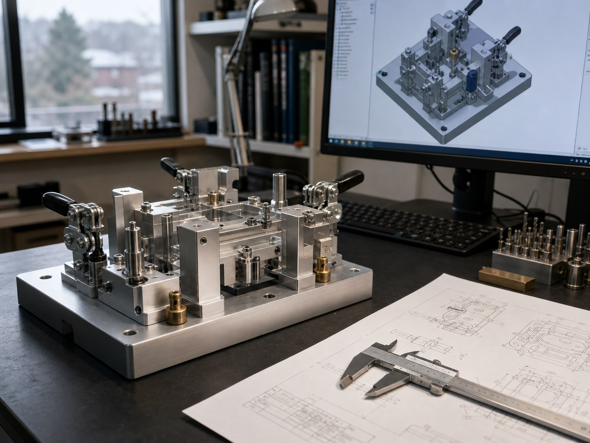
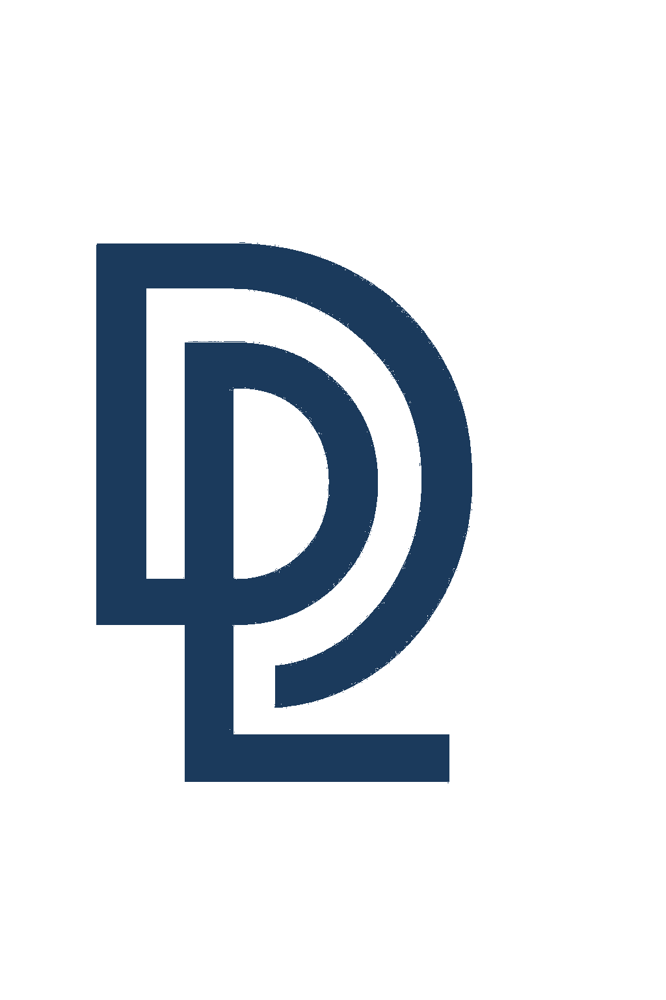
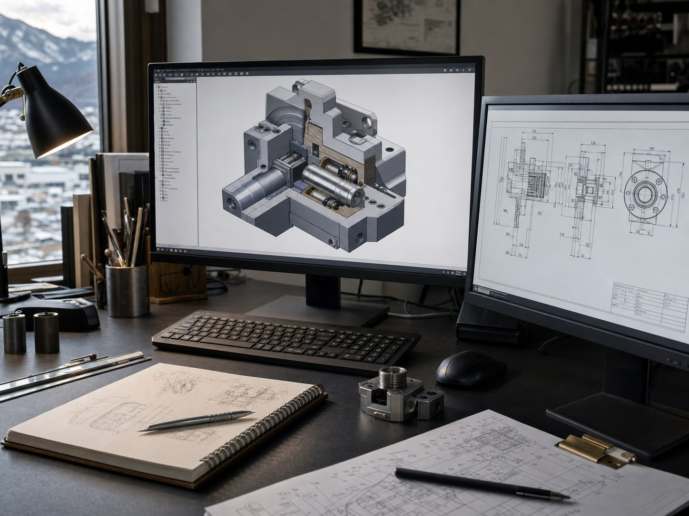
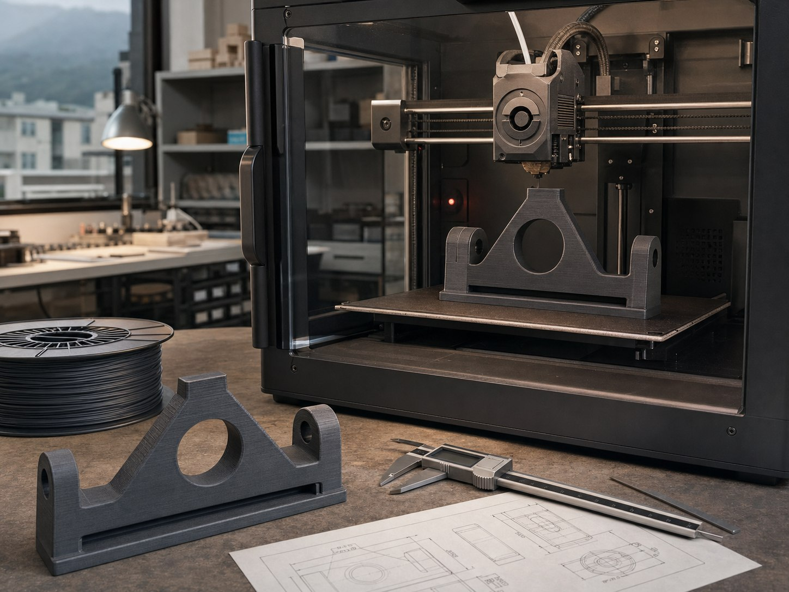
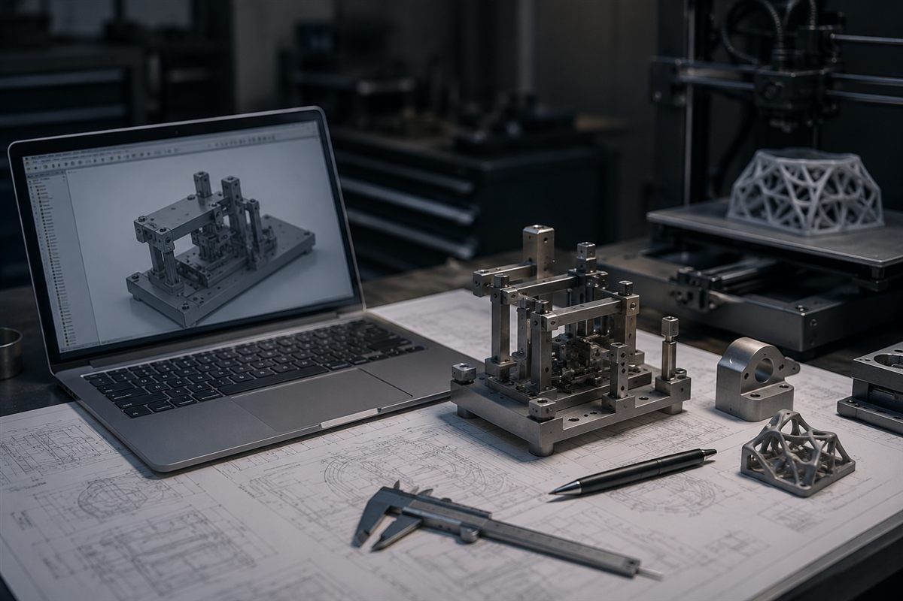

01
治具・装置設計
作業を支える治具や装置を、用途や現場の条件から設計。設計者の手が足りない場面を支えます。

01 PHILOSOPHY
図面ができたら終わり。ツールを入れたら終わり。
それでは、現場の困りごとは解決しない。
誰が、どこで、どう使うのか。
機械設計で大切にしてきた視点を、AIの活用にも。
本当に必要なものを、一緒に考えるところから始めます。
02 WHAT I DO
設計の手が足りない企業の方も、
アイデアを実物にしたい個人の方も。
必要なところから、お手伝いします。
01 / ENGINEERING

作業を支える治具や装置を、用途や現場の条件から設計。設計者の手が足りない場面を支えます。

頭の中のイメージやスケッチを、検討できる3Dモデルや図面に。形状を整理する段階からご相談いただけます。

画面の中のアイデアを、手で触れて確かめられる形へ。形状や使い勝手を確認し、次の設計につなげます。
掲載画像はサービスのイメージです。
02 / AI & DIGITAL
「AIを使ってみたい。でも何から？」
そんな経営者・管理職の方へ。日々の業務を伺い、実務で使える方法を一緒に探します。
困っている作業を整理し、AIに任せる範囲と、人が確認するポイントから考えます。
スプレッドシートなどの定型作業を対象に、作る過程も共有する支援を準備しています。

WORKSPACE IMAGE / DESIGN LOVER
03 ABOUT
長野県上伊那郡宮田村を拠点に活動する、機械設計者 × AIコンサルタントです。設計歴は7年。治具設計を専門に、装置設計、図面作成、3Dモデリングに携わってきました。
「困っている中小企業の支えになりたい」。その思いが、Design Loverの出発点です。必要なものを見極めて、実際に使える形で届けることを大切にしています。
MY COMMITMENT
仕様が固まっていなくても大丈夫。何に困っているか、何ができるとうれしいか。そこから整理します。
つくる前に、もっと簡単な方法がないかを考える。目的に合わないものを、おすすめしません。
対応できる範囲を明確にし、難しいことは率直にお伝えする。安心して相談できる関係を目指します。
04 HOW WE WORK
図面1枚の相談から、業務の見直しまで。
目的に合わせて、進め方をご案内します。
困りごと、つくりたいもの、ご希望の時期をお聞かせください。
対応範囲、納品物、費用、スケジュールを整理してご案内します。
内容にご納得いただいてから着手。必要な確認を重ねながら進めます。
合意した内容を一緒に確認し、図面・データ・制作物をお渡しします。
05 LET'S TALK
まだうまく説明できなくても、構いません。
小さな困りごとから、お気軽にどうぞ。